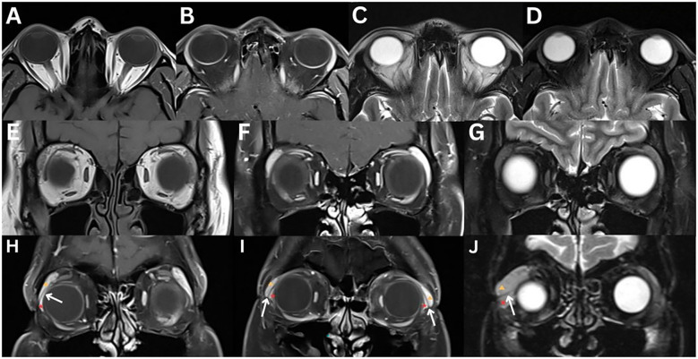
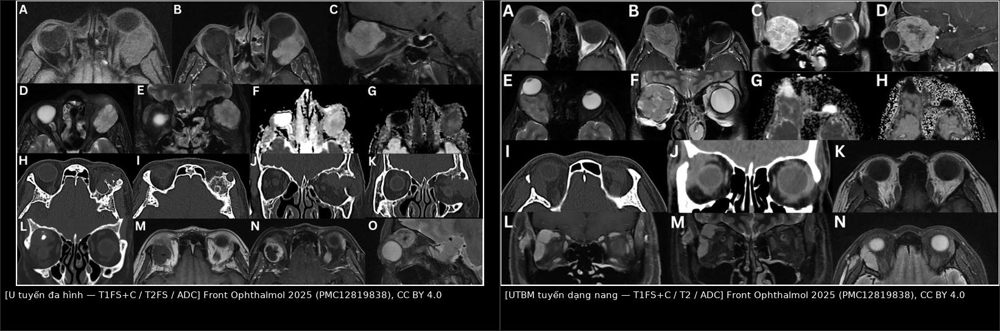
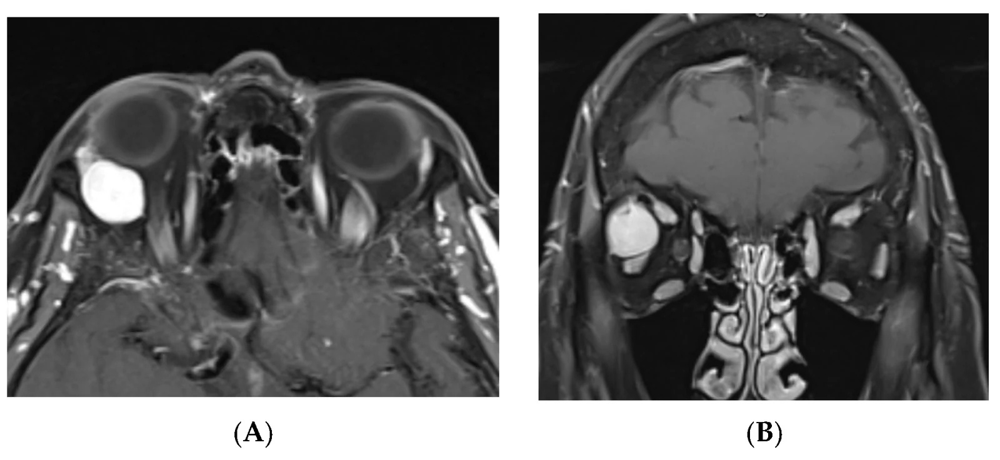
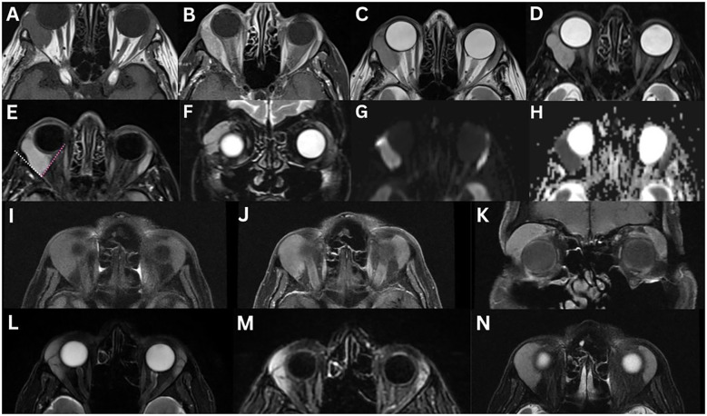
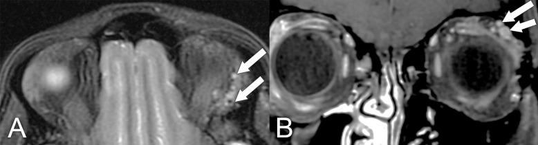

3230 — Khối tuyến lệ: u biểu mô – lymphoma – IgG4 trên MRI/CT / Lacrimal gland mass
Tags: pattern:khoi-hoc-mat pattern:tuyen-le-to pattern:di-lan-xuong pattern:wedge-sign pattern:hoai-tu-trung-tam pattern:xam-lan-than-kinh pattern:hai-ben-doi-xung vung:mat vung:hoc-mat protocol:MRI-hoc-mat protocol:CT-lat-mong protocol:DWI-ADC protocol:T1-fat-sat protocol:DCE score:ADC-cutoff incidentaloma:khong
Mức chắc chắn (certainty): tổng hợp y văn (literature synthesis) — dựng từ bài tổng quan hình ảnh tuyến lệ 2025 (Front Ophthalmol, PMC12819838, CC BY 4.0) với bảng 1 và 15 hình ca mẫu, 39 ca ACC có MRI – mổ (Cancers 2026, PMC13604454, CC BY 4.0), 27 PA + 16 ACC đối chiếu CT/MRI (Arq Bras Oftalmol 2023, PMC11826722, CC BY 4.0), 44 khối tuyến lệ có ADC (J Magn Reson Imaging 2014, DOI 10.1002/jmri.24392), 28 ca ADC lymphoma vs viêm (Indian J Ophthalmol 2024, PMC11573044, CC BY-NC-SA 4.0), meta-analysis tái phát PA 963 bệnh nhân (Orbit 2024, DOI 10.1080/01676830.2023.2269252 — dùng số liệu, không dùng ảnh) và 89 ca "sa tuyến lệ" có mô bệnh (Int J Ophthalmol 2025, PMC12120461). Nhóm không có bệnh nhân của mình; số nào chưa kiểm chứng ghi "chưa rõ". Không ghi tên tác giả — attribution dùng tạp chí + năm + PMCID.
Câu chốt: khối tuyến lệ chỉ có 4 câu hỏi làm thay đổi điều trị: (1) một bên hay hai bên? (2) một thùy hay cả hai thùy? (3) T2/ADC thuộc nhóm nào? (4) có xâm lấn xương – thần kinh – cơ ngoài nhãn cầu không? Bốn con số phải thuộc: (a) u biểu mô tuyến lệ < 1/1.000.000 người/năm; u tuyến đa hình (pleomorphic adenoma, PA) = 12–25% tổng u tuyến lệ còn UTBM tuyến dạng nang (adenoid cystic carcinoma, ACC) ≈ 60% u ác (PMC12819838); (b) ADC PA 1,37 ± 0,22 vs u ác 1,03 ± 0,19 vs lymphoma 0,55 ± 0,06 × 10⁻³ mm²/s; ngưỡng 1,14 tách lành/ác chỉ đạt Se 80% – Sp 100%, ngưỡng 0,76 tách nhóm lympho khỏi viêm giả u (Se/Sp 100%) trên 44 ca (DOI 10.1002/jmri.24392); (c) "wedge sign" KHÔNG đặc hiệu u ác: gặp 66,7% ACC nhưng 87,5% lymphoma và 84,8% IgG4 (PMC12819838); (d) ACC ăn xương 75% / phá xương 34% trong khi PA tái tạo xương 67% nhưng xâm lấn xương chỉ 2,2% (PMC12819838, PMC11826722). Bẫy chết người: ACC hoàn toàn có thể tròn, bờ rõ, ngấm đều như PA (PMC13604454) — bờ rõ không loại trừ ác; và chọc hở bao PA làm tái phát 8,83%, trong đó 47,09% ca tái phát có vỏ giả rách.
1. Tổng quan bệnh học – cơ chế hình ảnh (TẠI SAO)
1.1 Tuyến lệ là "tuyến nước bọt phụ" — nên gamut của nó cũng là gamut tuyến nước bọt + gamut hạch
- Giải phẫu: tuyến lệ nằm ngoài nón (extraconal), góc trên–ngoài hốc mắt, trong hố xương trán (lacrimal fossa); chia thùy ổ mắt (lớn, sau–trên) và thùy mi (nhỏ, trước–dưới) bởi sừng bên cân cơ nâng mi trên — mốc này chỉ thấy trên lát coronal và là mốc phân biệt "khối một thùy" (kiểu u biểu mô) với "to cả hai thùy" (kiểu viêm/lympho).
- Mô học: biểu mô tuyến + mô lympho tại chỗ → hai họ bệnh hoàn toàn khác nhau cùng nằm một chỗ: u biểu mô (PA, ACC, carcinoma ex PA) và tăng sinh lympho/viêm (lymphoma, tăng sản lympho phản ứng, IgG4-ROD, sarcoid, viêm túi lệ).
- Dịch tễ: u biểu mô tuyến lệ < 1/1.000.000 người/năm (PMC13604454); PA 12–25% tổng u tuyến lệ, ACC ≈ 60% u ác (PMC12819838). PA thoái triển ác tới 20%, nhất là sau cắt không trọn (PMC12819838).
- Vì sao MRI hơn CT: đồng thuận với mô bệnh của MRI 42% so với CT 12% (PMC12819838) — vì câu hỏi "khối này là u hay lympho/viêm" là câu hỏi mô mềm, không phải câu hỏi xương. CT giữ vai trò cửa sổ xương (phá xương, tái tạo, canxi hóa).

1.2 Vì sao mỗi bệnh cho một "chữ ký" tín hiệu riêng
- PA — nhiều chất nền myxoid/chondroid, giàu nước ngoại bào: nước tự do làm T2 sáng và khuếch tán tự do → ADC cao. Trên 35 ca: T2 tăng tín hiệu 86%, T1 đồng tín hiệu với cơ 97%, ngấm thuốc vừa 91% (PMC12819838). Vỏ giả (pseudocapsule) = viền tối mảnh trên cả T1 và T2 — chính là "vỏ" mà phẫu thuật viên phải giữ nguyên.
- ACC — tế bào dày đặc, ít nước ngoại bào, hoại tử trung tâm + canxi: phần đặc T2 trung gian, ADC thấp (1,03); hoại tử trung tâm T2 sáng, canxi T2 tối; ngấm thuốc không đồng nhất. Vì xâm lấn quanh thần kinh (dây thị giác, V1) và phá xương sớm, nên T1FS+C là thì bắt buộc để thấy lan theo dây thần kinh / xoang hang / màng não.
- Lymphoma — tế bào lympho xếp cực dày, màng lipid: ít khoang nước ngoại bào → ADC rất thấp (0,55) và T2 đồng–giảm tín hiệu so với cơ; nhưng "mềm" nên ôm khuôn nhãn cầu (moulding) thay vì đẩy lồi, không phá xương, ngấm đồng nhất, vừa–mạnh.
- IgG4-ROD — xơ hóa + thâm nhiễm lymphoplasma: xơ làm T2 tối (45,5% ca) và ADC thấp; nhưng khi còn hoạt động viêm thì ADC 1,45 (nhóm viêm) — nghĩa là cùng một bệnh, hai đầu ADC, và thử corticoid làm thay đổi hình ảnh theo thời gian.
- Nguyên tắc vật lý dùng chung: nước ngoài bào nhiều → T2 sáng + ADC cao; tế bào/xơ dày đặc → T2 tối + ADC thấp; hoại tử/dịch → T2 sáng nhưng ADC cao (không phải "restricted"); canxi/sắt/hemosiderin → T2 tối. Vì vậy "T2 tối" một mình không nói ung thư hay lành — phải đọc cặp T2 ↔ ADC ↔ bờ ↔ xương.
1.3 Ngưỡng định lượng nằm lòng
| Chỉ số | Ngưỡng / giá trị | Nguồn |
|---|---|---|
| Tần suất u biểu mô tuyến lệ | < 1/1.000.000 người/năm | PMC13604454 |
| Tỷ lệ trong u tuyến lệ | PA 12–25%; ACC ≈ 60% u ác; carcinoma ex PA thứ 2 trong u ác | PMC12819838 |
| Thoái triển ác của PA | tới 20%, thường sau cắt không trọn, sau 15–20 năm (carcinoma ex PA) | PMC12819838 |
| Đồng thuận hình ảnh – mô bệnh | MRI 42% vs CT 12% | PMC12819838 |
| ADC PA | 1,37 ± 0,22 (tỷ lệ ADC/u thùy thái dương 1,85 ± 0,34) | 10.1002/jmri.24392 |
| ADC u ác | 1,03 ± 0,19 (tỷ lệ 1,37 ± 0,27) | 10.1002/jmri.24392 |
| ADC lymphoma / tăng sản lympho | 0,55 ± 0,06 / 0,60 ± 0,06 | 10.1002/jmri.24392 |
| ADC viêm giả u | 0,90 ± 0,08 | 10.1002/jmri.24392 |
| Ngưỡng lành vs ác | ADC < 1,14 (Se 80%, Sp 100%); tỷ lệ < 1,6 (Se 90%, Sp 88,9%) | 10.1002/jmri.24392 |
| Ngưỡng lympho vs viêm | ADC < 0,76 và tỷ lệ < 1,0 (Se/Sp 100%/100%) | 10.1002/jmri.24392 |
| ADC lymphoma vs viêm (loạt 2024) | 1,03 vs 1,45 × 10⁻³ mm²/s (p = 0,02, n = 28) | PMC11573044 |
| Mô hình CART (TIC + ADC) | độ chính xác 86,1% (72 bệnh nhân) | 10.1177/02841851211021039 |
| CT của PA (45 ca) | bờ rõ 100%, đồng đậm cơ 100%, đồng nhất 78%, canxi 13%, đẩy nhãn cầu 73%, tái tạo xương 67%, xâm lấn xương 2,2% | PMC12819838 |
| MRI của PA (35 ca) | T1 đồng nhất 86%, đồng tín hiệu cơ 97%; T2 không đồng nhất 91%, tăng tín hiệu 86%; ngấm vừa 91% | PMC12819838 |
| CT của ACC | ăn mòn xương 75%, phá xương 34%, canxi ≈ 20% | PMC12819838 |
| Wedge sign (đuôi sau theo thành ngoài/trên) | ACC 66,7% (bên) / 55,5% (trên, OR 13,44 so lành); lymphoma 87,5%; IgG4 84,8%; viêm túi lệ 54,8% | PMC12819838 |
| T2 so với chất xám | lymphoma đồng 75% / tối 25%; IgG4 đồng 54,5% / tối 45,5%; viêm túi lệ đồng 85% / tối 15% | PMC12819838 |
| DCE (TIC) | lymphoma washout 50%, plateau 25%, tăng kéo dài 25%; IgG4 washout 80% | PMC12819838 |
| Lan ngoài ổ mắt | lymphoma: dây dưới ổ mắt 6,3%, tuyến nước bọt 20%, hạch 12,5%; IgG4: dây dưới ổ mắt 36,4%, xoang 72,7%, tuyến nước bọt 58,6%, hạch 54,5% | PMC12819838 |
| Tái phát PA | 8,83% (95% CI 5,08–13,50; 963 bệnh nhân/22 nghiên cứu); 47,09% ca tái phát có vỏ giả rách | 10.1080/01676830.2023.2269252 |
| "Sa tuyến lệ" có mô bệnh (89 ca) | viêm túi lệ 43%, thâm nhiễm lympho khu trú 20%, IgG4 15%, MALT 9% | PMC12120461 |
| Nang ống tuyến lệ (dacryops) | 3–6% tổng tổn thương tuyến lệ | PMC12819838 |
| Sarcoid tuyến lệ | gặp ở 7–15% bệnh sarcoid | PMC12819838 |
2. Mẫu hình + chẩn đoán phân biệt (gamut)
Bốn mẫu hình quyết định (đọc theo thứ tự, không nhảy bước):
- Khối MỘT bên, MỘT thùy (thùy ổ mắt), bờ rõ, T2 sáng, ADC cao, không hạn chế khuếch tán → PA (hoặc myoepithelioma — không phân biệt được trên hình ảnh).
- Khối MỘT bên, bờ không đều/lobulated, T2 trung gian, ADC thấp, wedge sign, phá xương, lan theo thần kinh → ACC / carcinoma ex PA.
- To HAI bên, CẢ HAI thùy, đồng nhất, ADC rất thấp, ôm nhãn cầu, không phá xương → lymphoma (hoặc tăng sản lympho phản ứng).
- To HAI bên ± dây thần kinh dưới ổ mắt dày, xoang/tuyến nước bọt/hạch cùng lúc, T2 tối, ngấm đồng nhất, IgG4 máu cao → IgG4-ROD (kèm sarcoid, Sjögren, viêm túi lệ như các "kẻ bắt chước" hai bên).
- Gamut theo bờ (margin):
- Bờ rõ, vỏ mảnh, lobulated — PA, myoepithelioma, ACC thể tròn (bẫy!), lymphoma, dacryops (thể nang).
- Bờ không rõ, thâm nhiễm mô mỡ, dính cơ — ACC, carcinoma ex PA, lymphoma thể lan, IgG4 thể xơ hóa, viêm túi lệ xơ, di căn.
- Gamut theo xương:
- Tái tạo/đẽo xương (remodelling, scalloping) không phá vỏ — PA (67%), u chậm lớn, lymphoma thể DLBCL (hiếm).
- Phá xương thật (erosion/destruction) — ACC (75%/34%), carcinoma ex PA (100% ăn mòn trong loạt 5 ca), di căn (nhất là HCC).
- Gamut theo thùy: chỉ thùy ổ mắt → u biểu mô; cả thùy ổ mắt + thùy mi, lan ra trước bờ ổ → lymphoma, IgG4, viêm túi lệ, sarcoid; chỉ thùy mi, dạng nang → dacryops.
- Gamut theo tuổi/bối cảnh: trẻ em → rhabdomyosarcoma, LCH, hemangioma (không nằm trong bài này); người lớn > 50 tuổi hai bên → IgG4, lymphoma, sarcoid; đã cắt PA trước đó → tái phát đa ổ (mục 5).
3. Bảng so sánh phân biệt (ma trận đối chiếu)
| Thực thể (entity) | Hình ảnh điển hình (CT / MRI ± DWI) | Chốt vào (rule-in) | Chốt loại (rule-out) | Gợi ý xác nhận |
|---|---|---|---|---|
| U tuyến đa hình (PA) | Một bên, một thùy (ổ mắt), bờ rõ, tròn/oval, lobulated, T1 đồng cơ, T2 sáng 86%, ADC cao 1,37, vỏ giả tối mảnh, không wedge, tái tạo hố xương | T2 sáng + ADC > 1,14 + bờ rõ + không phá xương + không hạn chế khuếch tán | Phá xương, lan thần kinh, ADC < 1,0, wedge sign → không phải PA | Cắt trọn bao nguyên khối (không sinh thiết hở); theo dõi tái phát |
| ACC | Một bên, bờ không đều, T2 trung gian, ADC 1,03, hoại tử trung tâm, canxi 20%, ăn mòn xương 75%, wedge 66,7%, lan V1/dây thị/xoang hang | Phá xương + wedge + lan quanh thần kinh; bờ không đều | Bờ rõ + T2 rất sáng + ADC cao + không xương không loại trừ tuyệt đối (ACC thể tròn) | Sinh thiết/ cắt trọn có kế hoạch; MRI có T1FS+C tới xoang hang |
| Lymphoma tuyến lệ | Hai bên 37,5%, cả hai thùy, bờ rõ, ôm nhãn cầu (moulding), không đẩy lồi, T2 đồng/tối 75%/25%, ADC 0,55, ngấm đồng nhất mạnh, wedge 87,5%, không phá xương | Hai bên + cả hai thùy + ADC < 0,76 + ôm khuôn nhãn cầu | Phá xương + xâm lấn cơ + T2 rất sáng → nghi carcinoma; ADC > 1,0 ít nghĩ lymphoma | Sinh thiết (core/excision) + hóa mô miễn dịch; PET/CT giai đoạn |
| Tăng sản lympho phản ứng (RLH) | Như lymphoma nhưng không đồng nhất hơn, ADC 0,60, thường hai bên | ADC thấp + hai bên + không phá xương | Không phân biệt được với lymphoma trên hình ảnh | Sinh thiết + theo dõi kích thước |
| IgG4-ROD | Hai bên 84,8%, cả hai thùy, giữ nguyên hình dạng tuyến, T2 tối 45,5%, ADC thấp, ngấm đồng nhất, dây dưới ổ mắt dày 36,4%, xoang 72,7%, không phá xương | Hai bên + dây dưới ổ mắt + tổn thương đa cơ quan + IgG4 máu ≥ 135 mg/dL | Một bên, phá xương, lan thần kinh thị → không điển hình IgG4 | IgG4 máu + sinh thiết: IgG4/IgG > 40% và > 10 tương bào/HPF; đáp ứng corticoid |
| Viêm túi lệ (dacryoadenitis) | Thường một bên, to lan toả giữ hình dạng tuyến, bờ mờ 64%, ngấm mạnh, đau cấp, có thể áp-xe | Đau cấp + bờ mờ + không phá xương; bạch cầu tăng | Bờ rõ + vỏ giả + T2 rất sáng → u | Siêu âm/CT tìm áp-xe; kháng sinh; không corticoid khi chưa loại nhiễm |
| Sarcoid | Hai bên đối xứng, cả hai thùy, T1 thấp–trung, T2 cao, ngấm đồng nhất, hạch rốn phổi/parotid | Hai bên + hạch trung thất + tăng calci máu/ACE | T2 tối + xơ hóa → nghĩ IgG4 | CT ngực, sinh thiết u hạt không hoại tử |
| Di căn tuyến lệ | Một bên, bờ không rõ, T1–T2 trung/cao, ngấm không đồng nhất, phá xương + lan nội sọ 57,1% khi có xương | Tiền sử ung thư (vú, gan, thận) + phá xương | Không có tiền sử, tổn thương đơn độc, bờ rõ → ít nghĩ di căn | Đối chiếu ung thư nguyên phát; sinh thiết |
| Dacryops (nang ống tuyến) | Thùy mi, nang thành mỏng, T2 rất sáng, không ngấm, không phá xương; 3–6% | Nang đơn thuần, không phần đặc | Có thành phần đặc/ngấm → u; nang + u nhỏ ở thành phải loại u gây tắc ống | Siêu âm; không chọc nang đơn thuần |

Ba tiểu mục dấu hiệu hay bị đọc sai
- Wedge sign (dấu đuôi sau): tổn thương chạy dài ra sau theo thành ngoài hoặc thành trên ổ mắt. ACC 66,7% (bên) và 55,5% (trên) — dấu trên có OR 13,44 cho ác tính so với u lành, nhưng lymphoma 87,5% và IgG4 84,8% cũng có. Kết luận: wedge = "khối lan theo mặt phẳng ổ mắt", không phải "khối ác".
- Moulding vs indentation (ôm khuôn vs lõm nhãn cầu): khối ôm theo nhãn cầu, không làm lõm = lymphoma/lympho; khối đẩy và lõm nhãn cầu = u biểu mô (PA đẩy lồi 73%).
- Bờ rõ (well-circumscribed): PA 100%, nhưng ACC cũng có thể bờ rõ — loạt 39 ca ACC có bờ nhẵn ở nhóm mổ giữ mắt, bờ không đều ở nhóm múc nội nhãn (PMC13604454), và ca Fig. 1 của loạt đó là khối tròn, bờ rõ, ngấm đều, cắt trọn, hóa ra ACC. Bờ rõ chỉ đổi xác suất, không đổi chẩn đoán.
4. Protocol chụp + phân tầng xử trí
4.1 Protocol tối thiểu (mọi khối tuyến lệ chưa rõ)
- MRI hốc mắt 1,5T hoặc 3T — bộ tối thiểu: T1 axial, T2FS axial + coronal, DWI (b = 0/1000) + bản đồ ADC, T1FS sau tiêm axial + coronal + sagittal (bắt buộc fat-sat vì tuyến lệ nằm trong mỡ), DCE nếu có (phân tích TIC).
- CT hốc mắt lát mỏng ≤ 1 mm, cửa sổ xương + cửa sổ mô mềm, có cản quang — để trả lời tái tạo hay phá xương, canxi hóa, và hố xương trán.
- Đo và ghi vào báo cáo (checklist 8 mục) — vì đây chính là các biến quyết định mổ:
- kích thước 3 chiều (cm) — ACC mổ múc nội nhãn 3,8 cm vs giữ mắt 2,9 cm;
- khoảng cách bờ sau khối → khe ổ mắt trên (SOF): 7,5 mm (múc) vs 15 mm (giữ mắt), p < 0,001;
- có vượt đường giữa dọc ổ mắt không (chỉ gặp ở nhóm múc);
- xâm lấn cơ ngoài nhãn cầu (chỉ gặp ở nhóm múc);
- phá xương / xâm lấn nội nón;
- lan quanh thần kinh, xoang hang, xoang mũi, hố chân bướm khẩu cái, hố thái dương (chỉ gặp ở nhóm múc);
- bề mặt bờ: nhẵn hay không đều;
- ADC trung bình vùng đặc nhất (ROI tránh hoại tử/canxi) + tỷ lệ ADC/tổ chức lành.
- Siêu âm: chỉ để hướng dẫn sinh thiết hoặc phân biệt nang đơn thuần — không dùng để chẩn đoán mô học.
- Xét nghiệm hệ thống khi nghĩ viêm/lympho: IgG4 máu, ACE, calci, CT ngực, công thức máu, LDH; PET/CT khi xác định lymphoma.
4.2 Ngưỡng ADC dùng trong thực hành (đọc kèm sai số)
| Câu hỏi | Ngưỡng | Hiệu năng | Ghi chú |
|---|---|---|---|
| Lành vs ác | ADC < 1,14 | Se 80%, Sp 100% | 20% u ác sẽ "rớt" trên ngưỡng → không dùng để bỏ sinh thiết |
| Lành vs ác (tỷ lệ) | tỷ lệ ADC < 1,6 | Se 90%, Sp 88,9% | Tỷ lệ ổn định hơn khi máy khác nhau |
| Lympho (lymphoma/RLH) vs viêm | ADC < 0,76 | Se/Sp 100%/100% | Cỡ mẫu nhỏ (44 ca), cần kiểm chứng lại |
| Lymphoma vs viêm (loạt độc lập) | 1,03 vs 1,45 | p = 0,02, n = 28 | Cùng hướng, khác giá trị tuyệt đối |
| TED (đối chứng) | ADC 1,62; hoạt động vs không hoạt động 1,76 | Se 97%, Sp 95% (TED vs chứng) | Nhắc rằng "ADC cao" cũng có trong bệnh viêm |
flowchart TD
A["Khối tuyến lệ trên MRI/CT"] --> B{"Một bên hay hai bên?"}
B -->|"Hai bên, cả hai thùy"| C{"ADC rất thấp dưới 0,76 và ôm khuôn nhãn cầu?"}
C -->|Có| D["Nghĩ lymphoma hoặc tăng sản lympho: sinh thiết core, hóa mô miễn dịch, PET/CT"]
C -->|Không| E{"Dây dưới ổ mắt dày, xoang hoặc tuyến nước bọt cùng lúc, IgG4 máu cao?"}
E -->|Có| F["Nghĩ IgG4-ROD: sinh thiết IgG4/IgG trên 40 phần trăm, corticoid thử có kiểm soát"]
E -->|Không| G["Nghĩ sarcoid, Sjögren, viêm túi lệ: CT ngực, ACE, calci, sinh thiết"]
B -->|"Một bên"| H{"Bờ rõ, T2 sáng, ADC trên 1,14, không phá xương?"}
H -->|Có| I["Nghĩ PA: cắt trọn bao nguyên khối, KHÔNG sinh thiết hở"]
H -->|Không| J{"Phá xương, wedge sign, lan quanh thần kinh, ADC dưới 1,0?"}
J -->|Có| K["Nghĩ ACC hoặc carcinoma ex PA: MRI tới xoang hang, đo bờ sau tới SOF, hội chẩn giữ mắt hay múc"]
J -->|Không| L["Theo dõi hoặc sinh thiết: chưa loại trừ ACC thể tròn"]
I --> M["Theo dõi MRI 6-12 tháng vì tái phát 8,83 phần trăm"]
K --> N["Sinh thiết hoặc cắt trọn có kế hoạch; xạ bổ trợ; theo dõi di căn phổi"]
4.3 Vì sao "cắt trọn bao nguyên khối" là quy tắc, không phải sở thích
- PA: vỏ giả là lớp chắn giải phẫu duy nhất; chọc/sinh thiết hở làm rách vỏ → gieo tế bào vào mô ổ mắt → tái phát đa ổ 8,83%, và 47,09% ca tái phát có vỏ giả rách (10.1080/01676830.2023.2269252). Tái phát đa ổ khó mổ hơn lần đầu, nguy cơ thoái triển ác tăng (tới 20%).
- ACC: quyết định giữ mắt + xạ vs múc nội nhãn dựa trên MRI trước mổ, không dựa trên kích thước cảm nhận; các mốc ở §4.1 là các biến duy nhất đã được đối chiếu với loại mổ trong loạt 39 ca (PMC13604454).
- Lymphoma/IgG4: điều trị không phải phẫu thuật cắt tuyến — chẩn đoán mô học là bắt buộc; múc nội nhãn vì "khối to" là sai lầm không hồi phục.
5. Biến thể bình thường và cạm bẫy
- "Sa tuyến lệ" (lacrimal gland prolapse) không phải chẩn đoán mô học: trong 89 ca được gọi là sa tuyến lệ, mô bệnh là viêm túi lệ 43%, thâm nhiễm lympho khu trú 20%, IgG4 15%, MALT lymphoma 9% (PMC12120461). Tuyến "sa xuống" trên lâm sàng có thể là khối thật → phải chụp trước khi kết luận "sa sinh lý".
- "Bờ rõ = lành" — sai: ca ACC 71 tuổi, khối tròn bờ rõ, ngấm đều, không đau, cắt trọn rồi mới biết ACC (PMC13604454). Bờ rõ + T2 sáng + ADC cao mới là bộ ba gợi ý PA.
- "PA luôn bờ rõ, đều" — sai: PA lớn có thể lobulated, không đồng nhất, chèn ép cơ trực ngoài và lan một phần vào nội nón; vẫn không hạn chế khuếch tán (PMC12819838, Fig. 2). Ngược lại, lobulated không đồng nghĩa ác.
- Wedge sign bị dùng như "dấu ác tính" — sai: lymphoma 87,5%, IgG4 84,8%, viêm túi lệ 54,8%; chỉ dấu wedge phía TRÊN mới có OR 13,44 cho ác (PMC12819838).
- ADC thấp bị dùng như "ung thư" — sai: lymphoma 0,55 còn thấp hơn ACC 1,03; ADC thấp = mật độ tế bào cao, không phải "ác".
- Sinh thiết hở khối nghi PA — chống chỉ định: rách vỏ giả → tái phát/gieo mầm (8,83%; 47,09% có vỏ rách). Nếu chưa chắc PA, hội chẩn cắt trọn kèm sinh thiết lạnh thay vì chọc qua da.
- Thử corticoid trước khi sinh thiết — có thể làm teo nhanh khối lymphoma/IgG4 và che mất mô học, đồng thời giảm khả năng chẩn đoán trên mẫu nhỏ; chỉ thử khi đã có kế hoạch sinh thiết ngay sau đó và theo dõi bằng MRI có đo kích thước.
- Nhầm "u nhỏ nhưng phá xương" là lành — phá xương luôn đổi chẩn đoán: ACC 34%, carcinoma ex PA 100% trong loạt nhỏ, di căn khi có xương lan nội sọ 57,1%.
- Bỏ sót xương trên MRI: MRI không thay CT cửa sổ xương; "không thấy phá xương trên MRI" không loại trừ — nhất là mảnh xương hốc mắt mỏng.
- Satisfaction of search: thấy khối tuyến lệ rồi dừng — quên dây thần kinh dưới ổ mắt (IgG4 36,4%), xoang (72,7%), tuyến nước bọt/hạch (58,6%/54,5%), dây thị giác, và nội sọ.
- Tái phát PA bị gọi là "sẹo xơ": sau cắt PA, nốt T2 sáng mới trong giường mổ là tái phát đa ổ, không phải sẹo — sẹo xơ T2 tối, không ngấm; ca 29 tuổi trong PMC13171307 tái phát sau > 5 năm với nhiều nốt T2 sáng.
6. Tự lượng giá — Blind Quiz ngay trên trang tĩnh
Ca 1 — nữ 71 tuổi, "nặng mi trên" không đau, khối tròn trên–ngoài hốc mắt phải

- Gợi ý lâm sàng: không đau, không song thị, không sụt cân; khối tròn, bờ rõ, ngấm thuốc đều.
- Câu hỏi: (a) Ba đặc điểm nào khiến bạn nghĩ u lành? (b) Vì sao không được chọc hở khối này? (c) Chẩn đoán mô học thật là gì, và điều đó thay đổi kế hoạch mổ thế nào?
Bấm để hiện đáp án (findings + chẩn đoán)
- (a) Tròn, bờ rõ, ngấm đồng nhất — đúng là bộ ba "giống PA"; nhưng không có T2/ADC trong ảnh này (chỉ T1FS+C), nên không đủ để chốt lành.
- (b) Khối còn nguyên vỏ giả: chọc hở gieo tế bào và làm tăng tái phát — với PA là 8,83%, với ACC là gieo mầm dọc đường chọc.
- (c) ACC — cắt trọn ("gross total resection") rồi xạ bổ trợ. Bài học: ACC thể tròn bờ rõ tồn tại; thiếu T2/ADC thì không được suy ra lành từ bờ.
- Nguồn ảnh: Cancers 2026, Fig. 1 (PMC13604454), CC BY 4.0.
Ca 2 — nam, khối tuyến lệ phải; có DWI/ADC

- Gợi ý lâm sàng: khối không đau, tiến triển chậm, ôm theo nhãn cầu; bệnh nhân thứ hai (I–N) hai bên.
- Câu hỏi: (a) T2 và ADC của khối nói gì? (b) Vì sao không phá xương lại là điểm quan trọng? (c) Bước tiếp theo bắt buộc là gì?
Bấm để hiện đáp án (findings + chẩn đoán)
- (a) T2 tăng tín hiệu, ngấm vừa, hạn chế khuếch tán mạnh trên DWI/ADC (G, H); wedge sign bên (B) và góc sau với thành ngoài nhọn (E).
- (b) Lymphoma tái tạo/đẽo xương nhưng hiếm phá xương; phá xương thật đẩy chẩn đoán về carcinoma/di căn. Ở bệnh nhân I–N, tổn thương hai bên càng củng cố nhóm lympho.
- (c) Sinh thiết core + hóa mô miễn dịch (và PET/CT giai đoạn) — không cắt tuyến mù, không thử corticoid đơn thuần.
- Phản biện nguồn: bài gốc ghi ca này T2 tăng tín hiệu, trong khi bảng tổng hợp của chính bài ghi lymphoma T2 đồng 75%/tối 25% so với chất xám — nghĩa là T2 không dùng để loại trừ lymphoma; giữ nguyên mô tả gốc và ghi rõ khác biệt này.
- Nguồn ảnh: Front Ophthalmol 2025, Fig. 5 (PMC12819838), CC BY 4.0.
Ca 3 — nữ 29 tuổi, > 5 năm sau cắt "u tuyến lệ", nay lồi mắt nhẹ trở lại

- Gợi ý lâm sàng: lần đầu cắt "trọn" nhưng có rách vỏ giả theo hồ sơ; lần này nhiều nốt chứ không phải một khối.
- Câu hỏi: (a) Nốt T2 sáng trong giường mổ là sẹo hay tái phát? (b) Vì sao tái phát đa ổ? (c) Nếu bỏ qua, nguy cơ dài hạn là gì?
Bấm để hiện đáp án (findings + chẩn đoán)
- (a) Tái phát: nhiều nốt T2 sáng (A) và ngấm thuốc (B) trong giường mổ, lan ngoài phạm vi mổ cũ. Sẹo xơ T2 tối, không ngấm.
- (b) Vỏ giả bị rách lúc mổ đầu → gieo tế bào vào mô ổ mắt → mọc nhiều nốt rời; 47,09% ca tái phát PA có vỏ rách (10.1080/01676830.2023.2269252).
- (c) Tái phát nhiều lần → nguy cơ carcinoma ex PA (thoái triển ác tới 20%, sau 15–20 năm), mổ khó hơn, có ca phải múc nội nhãn.
- Nguồn ảnh: Front Ophthalmol 2026, Fig. 6 (PMC13171307), CC BY 4.0.
7. Câu hỏi nghiên cứu & điểm chưa đồng thuận (tính đến 11/2026)
[Tranh cãi] Ngưỡng ADC nào đủ tin cậy để tách ACC khỏi PA mà không cần sinh thiết?
- Đã biết: PA 1,37 ± 0,22 vs u ác 1,03 ± 0,19 × 10⁻³ mm²/s; ngưỡng 1,14 cho Se 80% / Sp 100%, tỷ lệ ADC < 1,6 cho Se 90% / Sp 88,9% trên 44 khối (10.1002/jmri.24392); mô hình TIC + ADC đạt 86,1% trên 72 bệnh nhân (10.1177/02841851211021039).
- Chưa rõ: 20% u ác nằm trên ngưỡng 1,14; chưa có ngưỡng đa trung tâm, đa máy cho ACC nói riêng; ảnh hưởng của hoại tử/canxi trong ROI chưa được chuẩn hóa.
- Hướng nghiên cứu: nghiên cứu chẩn đoán mù đôi, tiền cứu, ROI đặt theo thuật toán cố định (vùng đặc nhất, tránh hoại tử), báo cáo Se/Sp theo từng thể mô học (ACC ống/tủy/cribriform) và hệ số tái lập giữa 2 người đọc.
- Nguồn: 10.1002/jmri.24392; PMC11573044; 10.1177/02841851211021039.
[Khác biệt thực hành] ACC tuyến lệ: khi nào còn giữ mắt, khi nào múc nội nhãn?
- Đã biết: loạt 39 ca cho thấy nhóm múc có khối lớn hơn (3,8 vs 2,9 cm), bờ sau cách SOF 7,5 vs 15 mm, vượt đường giữa, xâm lấn cơ ngoài nhãn cầu, xoang hang, hố chân bướm – khẩu cái (PMC13604454); các loạt khác báo giữ mắt + xạ có kiểm soát tại chỗ tương đương ở bệnh chọn lọc.
- Chưa rõ: không có tiêu chí được chấp nhận để chọn giữ mắt vs múc; các biến trong loạt 39 ca tương quan chặt với nhau nên không phải yếu tố độc lập; tỷ lệ tái phát theo T giai đoạn AJCC 8 chưa đủ mẫu.
- Hướng nghiên cứu: registry đa trung tâm, tiền cứu, phân tầng theo khoảng cách bờ sau → SOF (mm), T, và lan quanh thần kinh, so giữ mắt + proton/xạ điều biến với múc + xạ, outcome kiểm soát tại chỗ 5 năm, sống toàn bộ, thị lực.
- Nguồn: PMC13604454; PMC9396917.
[Khoảng trống] Lymphoma – tăng sản lympho phản ứng – IgG4: có dấu hiệu hình ảnh nào đủ để bỏ sinh thiết?
- Đã biết: lymphoma ADC 0,55, tăng sản lympho 0,60, viêm 0,90–1,45; ngưỡng 0,76 tách nhóm lympho khỏi viêm với Se/Sp 100% nhưng chỉ 44 ca; IgG4 hai bên 84,8%, T2 tối 45,5%, dây dưới ổ mắt 36,4%; 89 ca "sa tuyến lệ" có tới 9% MALT và 15% IgG4 (PMC12120461).
- Chưa rõ: không có ngưỡng ADC nào được validate cho IgG4; lymphoma và tăng sản lympho chồng lấp hoàn toàn trên hình ảnh; thử corticoid làm thay đổi hình ảnh theo cách chưa được định lượng.
- Hướng nghiên cứu: đoàn hệ tiền cứu có sinh thiết toàn bộ, so ADC + DCE + hình thái dây dưới ổ mắt với mô học và IgG4/IgG, xây nomogram và kiểm định ngoài; đặc biệt ở nhóm một bên, không điển hình.
- Nguồn: PMC12819838; PMC11573044; PMC12120461.
Bài liên quan chéo
- 400 – Tổng quan Mắt & thị giác
- 410 – Giải phẫu hốc mắt cắt lớp (khoang ngoài nón, hố xương trán)
- 424 – Tuyến lệ: viêm vs u (bài khung ngắn — bài này là bản chuyên sâu về gamut khối)
- 1461 – Áp-xe dưới màng xương hốc mắt ở trẻ (khối cấp, sốt, viêm xoang)
- 1473 – Viêm xoang nấm xâm lấn lan hốc mắt (khối hốc mắt do lan từ xoang)
- 1485 – Viêm túi lệ cấp & áp-xe túi lệ (khối góc trong, khác góc ngoài)
- 1510 – Hội chứng khoang hốc mắt cấp (khối + căng khoang = cấp cứu)
- 1515 – Theo dõi hốc mắt sau múc nhãn cầu (khi ACC phải múc)
Ảnh
- Tên file:
3230_khoi-tuyen-le_MRI_<mô tả>_<PMCID>.jpg; nguồn + giấy phép từng ảnh trongimages/CREDITS.md. - 7 ảnh gốc tải được: 5 ảnh CC BY 4.0 (PMC12819838), 1 ảnh CC BY 4.0 (PMC13171307), 1 ảnh CC BY 4.0 (PMC13604454) — cộng 1 ảnh ghép tạo từ 2 ảnh CC BY 4.0 của PMC12819838 bằng
tools/make_composite.py(letterbox, không crop). - Không dùng ảnh từ PMC11573044 (CC BY-NC-SA) và các bài chỉ trích số liệu: chỉ lấy số, không tái bản hình.
Không dùng để chẩn đoán độc lập khi chưa có người hướng dẫn.